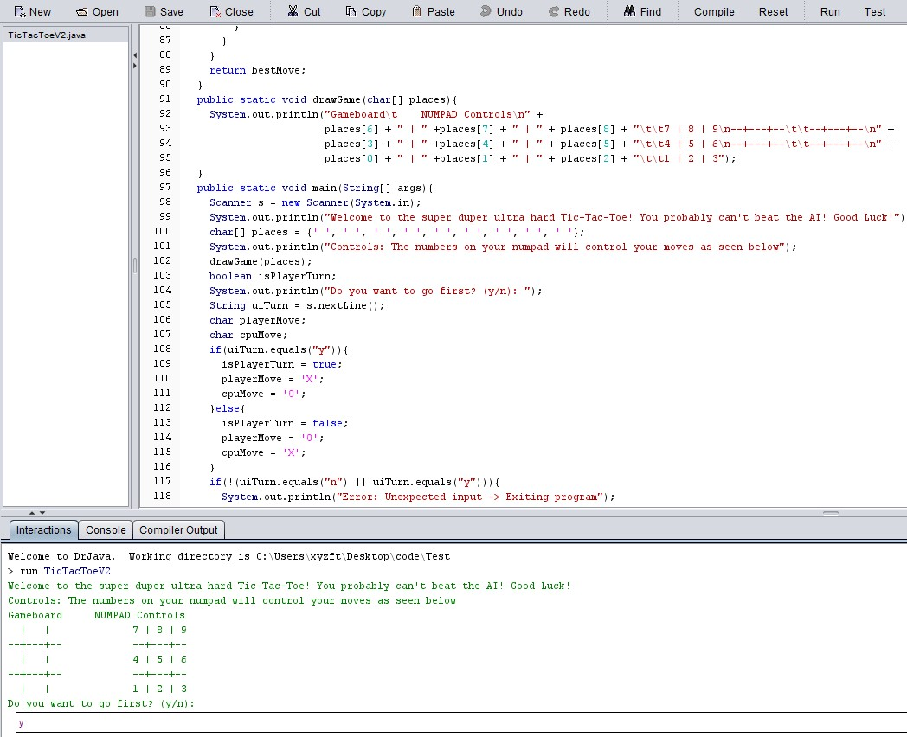

Tic-Tac-Toe with AI
This is the first project that I ever made. It was an assignment from my APCS A course at Bronx Science, but the assignment was just to create Tic-Tac-Toe with random AI. However, I really wanted to challenge myself, so I made three versions: Player Vs. Player Tic-Tac-Toe, Tic-Tac-Toe with the MiniMax Algorithm, and Tic-Tac-Toe with the Alpha-Beta Pruning Algorithm. Overall, I really enjoyed coding this project because, before that, I had this weird notion that algorithm design was difficult and hard to implement. While coding this, I discovered that it wasn't hard, as long as I broke everything up into steps. That mindset helped me greatly in future projects.